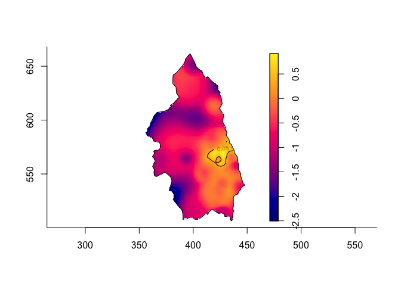

The sparr package for R provides functions to estimate fixed and adaptive kernel-smoothed spatial relative risk surfaces via the density-ratio method and perform subsequent inference. Fixed-bandwidth spatiotemporal density and relative risk estimation is also supported.
This package is available on CRAN, and we recommend installing it from there using the standard
install.packages('sparr')If you wish to live on the bleeding edge, you may install from github using devtools:
# install.packages("devtools")
devtools::install_github('tilmandavies/sparr')This is a basic example of relative risk estimation for primary biliary cirrhosis cases from north east England.
# Load library
library(sparr)
#> Loading required package: spatstat
#> Loading required package: spatstat.data
#> Loading required package: nlme
#> Loading required package: rpart
#>
#> spatstat 1.55-0 (nickname: 'Stunned Mullet')
#> For an introduction to spatstat, type 'beginner'
#>
#>
#> Welcome to
#> _____ ___ ____ ____ ____
#> / ___// _ \/ _ \/ __ \/ __ \
#> \__ \/ ___/ __ / ___/ ___/
#> ___/ / / / / / / /\ \/ /\ \
#> /____/_/ /_/ /_/_/ \__/ \_\ v2.2-12
#>
#> - type news(package="sparr") for an overview
#> - type help("sparr") for documentation
#> - type citation("sparr") for how to cite
# Load data on cases of primary biliary cirrhosis from north east England
data(pbc)
# Split into cases and controls
pbc_case <- split(pbc)$case
pbc_cont <- split(pbc)$control
# Estimate global bandwidth for smoothing
h0 <- OS(pbc, nstar="geometric")
# Compute a symmetric (pooled) adaptive relative risk estimate
# with tolerance contours
pbc_rr <- risk(pbc_case, pbc_cont, h0=h0, adapt=TRUE, tolerate=TRUE,
hp=OS(pbc)/2, pilot.symmetry="pooled", davies.baddeley=0.05)
#> Estimating case density...
#> Done.
#> Estimating control density...Done.
#> Calculating tolerance contours...Done.
# And produce a plot
plot(pbc_rr)